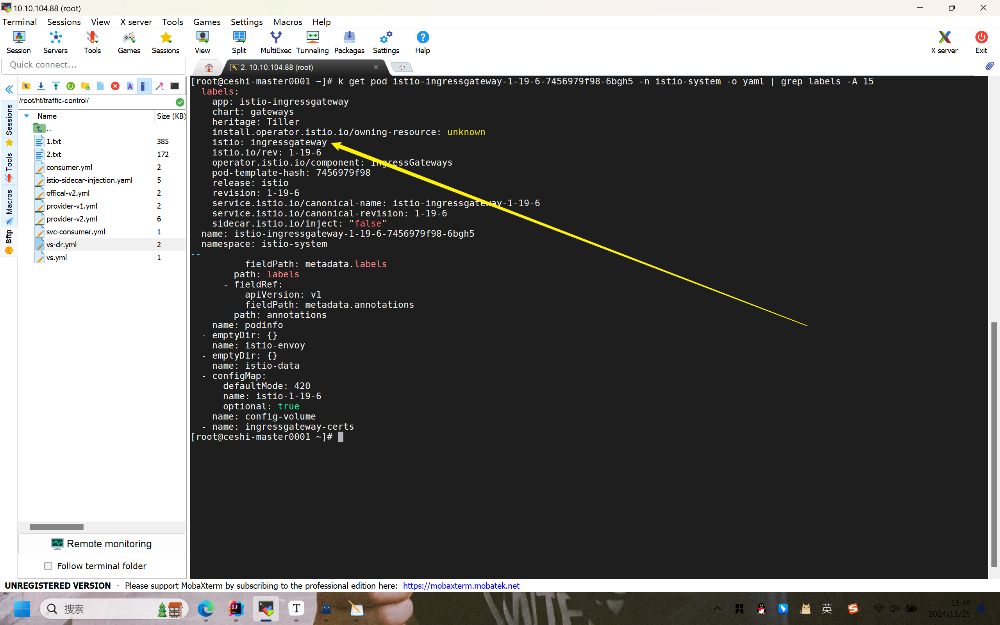
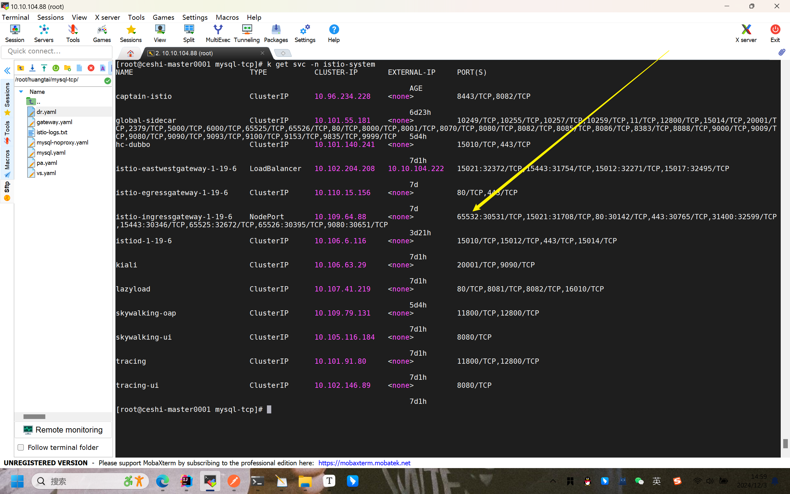

istio：外部基于TCP协议访问集群服务
参考内容：Istio(四)：创建部署Gateway并使用网关暴露服务-博客园
ingressgateway、service、VirtualService
流量路径：从浏览器到后端服务
1.用户访问 后端服务
- 用户在浏览器中输入
http://exam.com/getList。 - 浏览器通过 DNS 查询
exam.com的 IP 地址。
2.DNS 解析
exam.com 的 DNS 记录指向 istio-ingressgateway的外部 IP。
如果 Kubernetes
Service类型是LoadBalancer，则 DNS 指向云负载均衡器的 IP。如果是
NodePort类型，DNS 可以指向集群节点的外部 IP。
3.流量到达 Kubernetes Service（istio-ingressgateway）
外部流量通过 IP 和端口（如 80）进入 Kubernetes Service
istio-ingressgateway。此处忽略pod：istio-ingressgateway是clusterIP类型，我也不知道这个项目为什么对外暴露是clusterIP类型，这里正常来说是LoadBalancer或者NodePort这种对外可访问的资源
Service 将流量转发到运行 Ingress Gateway 的 Pod。
Ingress Gateway 的 Pod是安装istio服务网格的时候自动配置的内容
4.Envoy 代理解析流量（Istio Gateway 匹配规则）
Pod 内的
Envoy代理读取 Istio Gateway（CRD）的配置。Gateway是服务网格的自定义类型资源，这里提供一个实例的yaml文件
1
2
3
4
5
6
7
8
9
10
11
12
13
14apiVersion: networking.istio.io/v1beta1
kind: Gateway
metadata:
name: my-gateway
spec:
selector:
istio: ingressgateway # 选择 istio-ingressgateway Service 的 Pod
servers:
- port:
number: 80
name: http
protocol: HTTP
hosts:
- example.com匹配步骤：
检查
Host头部是否为exam.com（由 Gateway 的hosts字段决定）。检查请求端口是否为 80（由 Gateway 的
port字段决定）。
如果主机名和端口都匹配，则流量通过网关。
istio-gateway的pod和gateway（CRD）之间的绑定关系
我们来查看当时安装istio的时候，自动部署出来的pod，其中是包含istio: ingressgateway的labels，这里就形成了gateway和pod的绑定关系。绑定以后就是pod中envoy的主场。

hosts字段的作用
情况 1：没有设置 hosts
如果 Gateway 配置中没有指定 hosts（或者设置为通配符 *）：
1 | apiVersion: networking.istio.io/v1beta1 |
- 网关会接收所有到达其监听端口的流量，无论
Host是什么。 - 示例：
- 请求 1：
http://exam.com/getList→ 会被接收 - 请求 2：
http://random.com/getList→ 也会被接收 - 请求 3：
http://another.com/getList→ 仍然会被接收
- 请求 1：
在这种情况下，虽然网关接收了所有流量，但由于没有设置 VirtualService 的匹配规则，非预期的流量可能会导致错误或无效请求。
情况 2：设置了 hosts: example.com
如果在 Gateway 配置中指定了 hosts 字段为 example.com：
1 | apiVersion: networking.istio.io/v1beta1 |
- 网关只接收
Host为example.com的流量，其他主机名的流量会被直接丢弃。 - 示例：
- 请求 1：
http://example.com/getList→ 会被接收 - 请求 2：
http://random.com/getList→ 被拒绝 - 请求 3：
http://another.com/getList→ 被拒绝
- 请求 1：
区别：
- **没有
hosts**：所有主机名的流量都会进入网关。 - **设置了
hosts**：只有目标主机名匹配example.com的流量会进入网关。
5.VirtualService 路由流量
Envoy查找与 Gateway 绑定的VirtualService，解析路由规则。1
2
3
4
5
6
7
8
9
10
11
12
13
14
15
16
17
18apiVersion: networking.istio.io/v1beta1
kind: VirtualService
metadata:
name: example-virtualservice
spec:
hosts:
- exam.com
gateways:
- my-gateway # 绑定的网关
http:
- match:
- uri:
prefix: /getList
route:
- destination:
host: my-backend-service
port:
number: 8080根据路径
/getList，将流量路由到 Kubernetes Servicemy-backend-service。
6.Kubernetes Service 转发到 Pod
- 流量到达
my-backend-service，由 Kubernetes Service 转发到其后端 Pod（运行实际应用）。 - 目标 Pod 处理请求并返回响应。
7.返回响应
响应通过相同路径返回：
1
Pod -> my-backend-service -> VirtualService -> Ingress Gateway Pod -> Kubernetes Service -> 客户端
暴露TCP协议的MySQL
1. 部署 MySQL Pod 和 Service
MySQL 的 Pod 和 Service 定义如下：
1 | apiVersion: apps/v1 |
- 作用：
mysql-service将 MySQL Pod 暴露在 Kubernetes 内部，使用 ClusterIP 类型（默认）。- 服务的
selector确保流量被转发到运行 MySQL 的 Pod。
测试是否运行成功：
1 | # 进入pod容器后运行命令(此处填service的name而不是ip，因为ip会因为service重构而变换) |
2. 配置 Gateway 、VirtualService、DestinationRule
通过 Istio 的 Gateway 和 VirtualService 、DestinationRule将 MySQL 服务对外暴露：
1 | apiVersion: networking.istio.io/v1alpha3 |
3. 暴露端口
ingressgateway的service需要暴露gateway监听的端口

4. 访问ingressgateway的ip+暴露端口
1 | mysql -h 10.109.64.88 -P 65532 -u root -p |
负责项目：邮储服务网格研发
项目描述：本项目作为微服务架构体系，通过引入Istio服务网格与Spring Cloud框架，实现了各微服务容器化、服务间的灵活调度与高效协同。网格项目提供服务注册、服务暴露、流量管理、安全隔离、服务监控及策略实施等核心功能，通过本地 ServiceMesh 项目来测试服务的控制状态和资源调用。同时项目遵循devops的研发过程，在公司的自研平台中对项目进行持续发布、持续运维、持续部署。
主要技术：SpringCloud、kubernetes、Skywalking、Istio、SSH、Docker、Harbor、Postman接口测试等。
实习内容：● 参与 kubenetes 和容器云课程学习，了解云原生整体架构和原生微服务的缺陷及对应解决方案。
● 参与 Istio 与微服务集群进行 kubenetes 资源的开发，参与前后端联调，协助完成多个系统接口的对接工作。
● 参与服务网格中的 Gateway 设计，使用vip实现入口网关高可用，集成 keepalived 对访问流量进行路由转发。
● 参与服务暴露接口，实现基于HTTP、HTTPS、TCP协议下，对注入边车代理的服务进行集群内的服务暴露。
● 根据项目的迭代使用 debug 检测系统中的多项 bug 并且进行修改，修复资源意外过滤、资源无法正常访问等问题。